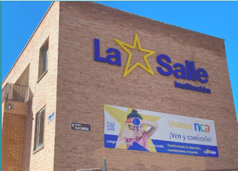
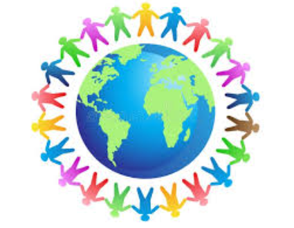

Fe
Cultivamos la espiritualidad y el sentido profundo de la vida.
Instituto Educativo
Bienvenidos al portal oficial del Instituto LaSalle. Un lugar donde la fe, la fraternidad y el servicio se unen para transformar vidas.
Conoce Nuestra Labor SolidariaEl Instituto LaSalle es parte de una red global de centros educativos con más de tres siglos de historia. Nuestro compromiso es ofrecer una educación integral de calidad, basada en el respeto, la responsabilidad y el acompañamiento personalizado a cada alumno.
Buscamos no solo la excelencia académica, sino también la formación de ciudadanos comprometidos con la sociedad y los más vulnerables.

Cultivamos la espiritualidad y el sentido profundo de la vida.

Creamos comunidad y un ambiente de familia acogedor.
Educamos para la solidaridad y el compromiso social.